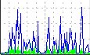

The year is 2008. You are in a small cubicle. Surrounded by electronics and empty coffee cups, you begin to read your morning email. Wading through log analysis reports, meaningless alarms triggered by inappropriate NMS thresholds, and automated escalations that no-one cares about from your help desk system, you look up at the incandescent sun-substitute hanging from the ceiling and can't hold back the smile: another happy day in paradise.
And then it hits you like a wet fish in the face - an email from your supervisor with no body, but simply a subject: "The internet is slow - fix it (no text)". Slow internet is not good. No-one likes slow internet. No-one likes you when there is slow internet. Just like other times. With a sense of numinous dread, you approach the problem with your set of network management tools.
You fire up the console of <Vendor X's tool> and open a bandwidth graph on your Internet router, but are shocked to find that you are over quota on the per-element license count, and the router hasn't been monitored for 7 weeks. Time to crank up the Web interface of <Vendor Y's tool>, but you soon find that it hasn't updated its ifIndex mappings after the last router reboot. The result? A flat line of zero data for the last 4 months. In desperation you line up the AsItHappens desktop icon and double-click. Ahhh, instantly the graphical presentation of the real-time fluctuations in bandwidth, latency, CPU and memory immediately indicate the actual source of the problem: too much stuff is happening at the same time. And it shouldn't be.
Another email - this time from a user unable to check her eBay auction. The phone rings - his YouTube if undergoing heavy buffering problems. Then the chairs from "co-"workers start flying, wrapping you on the head (a mere flesh wound), the leg (who needs them?) and the mouse hand (this means war!) You know what to do. You have been trained. You don your helmet and spandex and with a single keystroke jump into your network defense machine.
And thus your struggle against the evil company of users begins, a struggle that will assuredly test the upper limits of your skill, cunning and dextering, a struggle that paints a picture, a picture that can only be described with a thousand words. Less 997 words.
Your struggle is simply described as this: Self Defending Network.
Navigate the terrain with these controls:
| Key | Operation
|
|---|
| N | Start game (from any graph)
|
| Left arrow | Move left
|
| Right arrow | Move right
|
| Up arrow | Move up
|
| Down arrow | Move down
|
| C | Fire laser
|
| X | Drop bomb (if you have one)
|
| Z | Take invincibility pill (if you have one)
|
Your struggle will see you combatting these enemies:
| l-user
|
| cr-user
|
| br-user
|
| VB developer
|
| C++ developer
|
| Java developer
|
| Enterprise architect
|
| Procurement
|
There are also a number of bosses to defeat as you navigate the nine levels of corporate hierarchy.
Fortunately, the procurement ladies along the way carry routers you have ordered previously when you got on well with them. Destroy them to receive these benefits:
| Increased laser power
|
| Increased ship speed
|
| Increased elevation over graph
|
| Additional laser fire
|
| More bombs
|
| An invincibility pill
|
| The null router - this does nothing
|
As the your Network Defense progresses, you will come across three kinds of bonus:
1. Rainbow Router Bonus
The seven types of router not only afford you the various powerup capabilities, but yield a bonus if all are collected. Collect all seven routers to receive the Rainbow Router Bonus.
2. Install Media Yahtzee Bonus
Scattered throughout the graph are various Unix install CDs. You are able to mine the graph with your laser fire or bombs to recover the install media. Collect a critical mass of the various types of media to gain the Install Media Yahtzee Bonus.
3. Bonus Ship
Every 200,000 points gained earns a bonus ship to contribute to your network defense.
Some words of advice to aspiring Network Defenders:
- Users become smarter throughout as you progress through the corporate hierarchy. Be prepared for them to alter their attacking styles.
- True to reality, bosses adhere strictly to fairly simple patterns. Stimulus-response without the response if you will. Learn their patterns and determine the best counter approach.
- Be diligent in procuring powerups, particularly early on.
- Don't die too much. Although there is an hint of self-evidence in this statement, it is important to remember that losing a life reduces the powered state of your ship. Some of the later levels are much more difficult to navigate without a sufficiently powered-up ship.
- Collecting install media yields a good points reward. Mine the graph for these to increase score rapidly and gain bonus lives.
- The Java sound library has known to crash the JVM in some situations. If this appears to be a problem, turn of sound effects by adding the line "sdn.sound.enabled = 1" line to the "asithappens.properties" file in the "config" directory.
Here are my personal favourite scenarios when Defending My Network:
- Local loopback bandwidth. Good for starters - a solid and predictable terrain to navigate.
- Response across the Internet connection. When your FPS gamers suffer, you can suffer along with them.
- Local network interface bandwidth. Now instead of going to all the trouble of removing the spyware and trojans that are monopolizing your network bandwidth, you can not only observe their impact on your network, but destroy their effects in real time.
- Netflow graph on any router. Just for the pretty colors.
- Low-speed Frame Relay branch bandwidth. Fix the graph top to double the CIR if you're new to this, CIR for veterans.
- Response to a branch while on the phone to a regular complainer. Say with all honestly and integrity that you can't see any significant response problems as you shoot down those latency spikes in real-time (collecting the resulting install media in the process).
So once again the delicate balance of the company lies within your hands. On the one hand, users with only you standing between themselves and unbounded stupidity, on the other hand, your guile, insight and cunning. You know the gravity of the situation. Now go Defend Your Network.